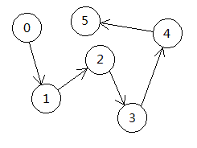
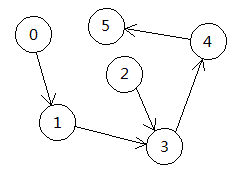
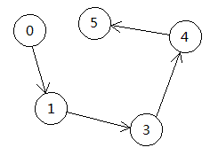
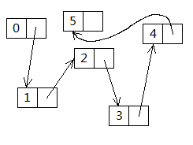
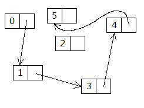
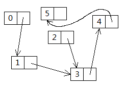

在前面的一章里,我们介绍了函数接口与伤害处理,并且通过解决前面提出的伤害问题,又演练了结构体,最后简要介绍了文本宏.在这一章里面,我们将继续用结构化的思想来解决一个常见问题,并且将以链表为起点,开始讲解简单的数据结构.
这一章里面,我们将会学到:
个人认为,结构体就是Vjass/Zinc的精华部分,它使我们能够更加方便地将各种资料,对象以一种抽象的形式表现出来,说得简单一点,就是将任何物件所具有的属性以及行为列出来,然后再写出相应的代码,所以,它更加有助于使我们先分析问题,再去解决问题.
说实在的,这个问题自从在DotA不让共享物品以后,以各种形式如雨后春笋般地在各大WE论坛被提出,确实,如果能够比较好地实现一件物品与第一次拾取它的单位绑定,能够在一些对抗图里面起到一定的平衡作用.
那么,在这里,我们将实现如下功能,任意物品在第一次被某单位获得以后,将与该单位绑定,就算是该单位将此物品扔下,其他单位仍然无法拾取这件物品.
一个物品,它有如下属性:类型id,生命值,等级,剩余次数,名字,等等等等.但是,我们在这里由于对物品进行了重新定义,让它有了从属于某个单位这项属性.因此,如果我们将这种物品抽象为一种新的结构的话,它除了具有一个 item类型的属性,用于保留原有物品的属性,还应该有一个unit类型的属性,用于保存这个物品的使用者.
如果用结构体的形式描述出来,那么可以这样写:
注意这个结构体叫Item,与WC3自带的item有区别.关于这个结构体需要做什么,稍加分析便可知,当任意单位拾取任意物品的时候,会有三种情况发生:
那么可以在库的初始化函数里面这样来新建一个触发器,为其注册玩家单位拾取物品的事件,再添加检查条件.在条件函数里面,我们需要能够通过这个物品查找到这种Item 的一个实例,也就是将实例与物品绑定起来,使用前面两章提到的方法:Table,便能比较方便地解决这个问题.另外,这个结构体也应该能创建一个新的物品-单位映射关系,也就是创建一个新的Item来储存这个物品以及其用者.
下面是完整的结构体代码:
整段代码都很简单,没什么好注释的,这里只对里面的一些代码习惯做简要解释.
其实我们完全可以让Item结构内的user变量为public,不将其声明为private ,这样就可以直接通过instance.user来获得这个实例的用者,并且现在我这样做,多调用一次函数,反而降低了执行效率.但是,如果从可维护性的角度考虑,万一以后获得使用者的方法发生改变,使用直接读取成员变量的方式的话,我们就要将所有这样的代码进行修正;如果使用一个额外的方法来写的话,我们就只需修改Item结构里面的getUser方法,便可以实现一个地方更新,其它地方都不需要改动.
是的,它没有被用到,目前看来,这个Item结构似乎只需要一个unit 属性,因为我们反正是通过Table来查找这个实例的,但是,万一我们要对这个物品做其它的什么事情呢?现在把这个物品theItem放在结构里面,是为了便于理解,实现单位与物品挂钩的效果.
我总是希望我们能够通过一个实例里面举一反三,比如这里,我们看起来是给物品添加了一个新的属性:使用者.那么,同样的道理,如果读者您想做一个很复杂的设定,里面的单位拥有很多属性,其实,可以用类似的方法来解决问题,比如:
并且,这里仅仅是一个热身练习,让读者慢慢地构建起万事从结构的角度去考虑,分析问题的思维方式.
下面,要开始本章的重头戏了.
链表(Linked List),顾名思义,就是用链条连起来的表,不过这样说起来与其真实面貌有些偏差,其实它是用链子把一个个节点连起来的一种模型,通常就叫做表了.请看下图.

整个图表示的是一个表,这个表有一个起点,然后这个起点指向下一个节点,然后下一个节点再指向它的下一个节点,以此类推.
那么,有的读者可能会想,如果是想表示一系列的数据的话,用数组就可以了,干嘛还弄个这么抽象的模型出来.
如果是使用数组的话,删除中间的数据,通常为了保证数组的连续性,我们需要把后面的所有元素往前挪一格.
[0][1][2][3][4][5] //移除2
[0][1][ ][3][4][5] //左移
[0][1][<][3][4][5]
[0][1][3][<][4][5]
[0][1][3][4][<][5]
[0][1][3][4][5][ ]
再看链表是如何做的.
让节点1指向节点3.
移除节点2.
类似地,如果是插入操作,对于数组,我们则需要将插入点后方的所有数据全部往后挪一格,但是在链表里面,只需让前面那个节点指向新的节点,新的节点指向下一个节点,便大功告成.
所以,相信已经很明了了,如果有什么情况是需要频繁地插入,删除数据项,并且要保证数据的连续性,链表这种结构无疑要比数据好很多.当然,链表也不是完美的,它的弱点是读取不方便,比如,对于数组,如果我们要获得第67个元素,只需使用"数据[67]"这样的形式,便可读取第67个元素的数据,但是链表没有索引号,要读取第67个元素的话,不好意思,由于它是链式结构,得从第一个开始,然后第二个,然后第三个...直到第67个.
因此,这里只是将这种数据结构介绍给大家,至于该怎么用,还是智者见智.
上面那副图其实不完整,每一个圆圈是一个节点,里面存有一个实际数据,和一个它所指向的节点,因此,一个节点至少有两个属性:数据,节点.下面是更加精确的图示:

而一个链表的结构则更加简单,它只需要有一个头节点就可以了,通过这个头,我们便可以顺着箭头找到所有的数据了.
说了这么长时间的空话,在WC3里面怎么做呢?
下面就做个兔子链表,嗯,是的,用兔子作为节点,然后用生命汲取的闪电效果来做成链条.为了便于说明,我们先不做闪电效果,免得混淆视听.
首先是节点问题,上面的图例中,数据项是整数,但是,好像没有谁规定"数据"只能是整数,我们可以拥有任意多的任意类型作为数据,这里使用一个单位;然后,箭头指向的是下一个节点,在代码里面我们当然不可能画个箭头,它实际上是一个自身类型的数据.比如幼儿园的小朋友排成一队玩游戏,队头的 小朋友的下一个仍然是小朋友,因此,同理,节点的下一个仍然是节点,因此该数据的类型也自然是节点.
上面代码便是一个节点应该有的属性,有一个unit类型的"兔子",和一个Node类型的"下一个".
下面是节点的create方法.
然后,应该有获取节点的属性的方法:
并且,需要有方法能够设置下一个节点(next):
destroy方法:
我们假定,在兔子死亡的时候才会destroy,因此,就不须在destroy方法里面杀死兔子了.
上述方法里面,除了create方法以外,其它方法都是涉及到这个节点实例自身的行为,并不与其它节点共享,因此设定为非静态方法.
然后再写链表,前面说过,链表的属性只须是一个头节点即可.
下面是链表的create方法.
新的链表的头节点不指向任何节点,因此将head属性初始化为0.(至于为什么可以将结构类型的数据直接赋整数值,请参考这里)
然后,从一个指定节点后方插入新的节点:
首先,声明一个局部变量,将头节点的值赋予它,然后只要当前节点不为0,持续查找,如果找不到,则让node等于node的下一个,意思就是顺着链子往下找,如果找到的话,令新节点的下一个值等于当前节点的下一个节点,然后让当前节点的下一个节点为新的节点,最后结束当前方法.请看下图:
插入点为节点1,插入节点2.
节点2的下一个节点赋值为节点1的下一个节点,即节点3.
节点1的下一个节点赋值为新的节点,即节点2.
有时候我们需要直接从表尾追加节点:
在这里,我们在创建第一个节点的时候需要调用这个追加方法,如果当前节点为0,即表为空,直接令头节点等于新的节点就可以了.否则,持续查找,直到当前节点的下一个节点为0,意思就是已经到了表尾,然后设置当前节点(尾节点)为新节点.
移除节点的方法:
由于头节点不存在前一节点,所以在删除节点方面,把头节点和其他节点分开处理.
我们这里所使用的参数都是节点类型,但是在游戏中,我们实际上操作的是兔子,因此,需要一个方法由兔子查到节点:
非常类似的查找方法,便不再赘述.
一个基本的链表便写出来了.在本章附件的地图里面,作者是通过使用技能作为触发媒介来操作这个链表的,其代码很简单,读者可以自行阅读.
前面说过的,用兔子做节点,用生命汲取的闪电效果做链条,形成一个视觉上的"链表".
每一个节点的链条由当前节点的兔子指向下一个节点的兔子,然后由于兔子总是会动来动去,并且兔子随时可能死亡,因此,每个节点应该都有一个计时器,来周期性地重新设置闪电效果的位置.
通过上述分析,我们需要修改的仅仅是节点而已,和链表没有任何关系,因此,代码的修改量并不大.
新的结构:
在create方法里面,建立一个新的计时器,然后将此结构绑定在计时器上面,下面是刷新闪电效果的方法(计时器动作):
需要修改的还有setNext方法,毕竟这也是影响闪电效果指向的方法:
上面就是简单的链表结构了,其实随便拿几张图片出来,这种结构不难理解,如果能够灵活使用这种结构的话,它可以衍生出很多变化形态,应付我们需要实现的很多问题.
既然我们能够在节点的成员里面保存下一个节点的信息,同样的,我们也可以保存其上一个节点的信息,这样,便可以获得任意节点的前方节点和后方节点了,这种链表叫做双向链表,也是常用的链表类型.这里就只作介绍,不再给出代码了,在上面的例子面稍作扩展便可以得到双向链表了.
不过在插入和删除的时候,需要特别注意把操作的节点的前后节点都指明清楚.
在上面的链表中,如果我们要获得尾节点,还得把整个链表走一遍,显得有点慢,但是,如果我们消耗一个节点的存储空间,令它的下一个节点为链表的第一个节点,令它的上一个节点为链表的最后一个节点,并且最后一个节点的下一个节点为这个空的节点,我们就模拟出了一种环状的链表结构,可以方便地从链表的两头开始进行操作,这样的链表叫做带头节点的循环链表.
如果有这样一种链表,它只允许在表尾进行操作,即没有从中间插入或者是从中间删除的操作,只能在尾部追加,或者从尾部删除,这样的结构叫做栈.
试想洗盘子,别人不停地把脏盘子拿过来堆在那叠脏盘子的上面,然后有人则从脏盘子堆叠的顶部拿过来洗,洗的同时,又会有新的脏盘子被堆上去,这不就是仅仅在表的尾端进行操作吗?再想一下DotA里面屠夫的肉钩,抛出一根钩链,将触碰到的单位拉到身边.屠夫抛掷出一根由小三角组成的链条,一个个新的小三角出现在链条顶端,最后,链条由顶端开始收缩,最后回到屠夫身边.
这种结构,先进去的最后出来,最后进去的,最先出来,叫栈,不过请注意,栈并不是一定要依赖链表的结构才能实现,它也可以通过数组来实现:
[ ][ ][ ][ ][ ][ ] // 空的栈
[0][ ][ ][ ][ ][ ] // 追加(入栈)
[0][1][ ][ ][ ][ ] // 入栈
[0][1][2][ ][ ][ ] // 入栈
[0][1][2][3][ ][ ] // 入栈
[0][1][2][ ][ ][ ] // 移除(出栈)
[0][1][2][3][ ][ ] // 入栈
[0][1][2][3][4][ ] // 入栈
[0][1][2][3][4][5] // 入栈
[0][1][2][3][4][ ] // 出栈
[0][1][2][3][ ][ ] // 出栈
[0][1][2][ ][ ][ ] // 出栈
队列只有一点和栈不同,栈是在尾端(绽顶)进行出栈入栈操作,队列则是在队头移除(出队),在队尾追加(入队),或者说在队头入队,在队尾出队也行,总之就是添加和删除在队列的不同端进行.
这里讲的顺序表在WC3里面的表现形式就是数组,而这里说的数组,不仅指一维数组,更指多维数组.
关于顺序表,大家一直在使用,不过大概没有意识到自己使用的正是这种数据结构,在WC3里面,数组上限是8192,并且通常我们是用不满的,我们也无法得知我们已经使用了多少个元素,因此,比较普遍的做法是另外声明一个整数,用来表示当前使用过的元素个数,这也是顺序表的一种使用方法.
下面讲数组.
其实,数组也是一种结构,它有存储类型,比如单位数组只能存放单位,整数数组只能存放整数;它有尺寸,比如WC3的数组尺寸上限是8192.
在Vjass/Zinc里,Vexorian为我们突破了尺寸限制,并且开放了二维数组.
超大数组
二维数组
有两点限制:
本章的内容其实不多,不过希望读者能够重点理解链表,并打开思路,灵活使用结构体.
到这里,本教程可以说是完结了,但是,这里并没有涵盖所有的Vjass/Zinc语法,而只是选择非常常用的语法功能来讲解而已.并且,读者朋友应该可以发现,这个教程自始至终都是以结构体为重点在讲解,所以,作者真心地希望读者能够在读完本教程以后以一个新的角度来考虑,分析问题,尽管这只是笔者的一厢情愿,并且由于自身水平有限,也许并不能将这些思想通过教程完美地传达给读者.
由于本教程选取一些比较常见的魔兽制图问题来进行讲解,但是希望读者能够明白,在教程中讲到的解决方案并不是唯一的,希望这些示例没有限制到读者的思路.并且,如果读者通过阅读本教程而对Vjass/Zinc有了一个新的认识,或者是觉得入门了的话,希望读者能够继续阅读TigerCN的Vjass教程和Aeris的Vjass教程,这两部Vjass教程涵盖了所有JassHelper提供的Vjass功能和语法.在这里也提供下载.
并且,这里附上一些常用的Vjass库,它们将有助于读者完成一些特殊功能.